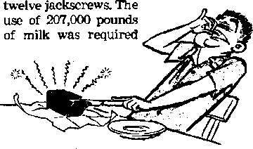
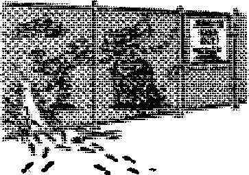

Can man solve earth’s problems?
■' ------
Switzerland considers a controversial question
Large-scale terrorism
— ■ ■ "—--------
Not a toe hold of support in the Bible!
NOVEMBER 22, 1954 semimonthly
THE MISSION OF THIS JOURNAL
New* vpurott that «rw able to hoop you awahe io the vital keue* of our ttmee court be unfettered by osneorehip and aelfish Interests* “AwakeJ" has no fetters. It rtcodnint farts, &cee facfe, is free io publish facts. It is not bound by political ambitions or obligations; it is unhampered by advertisers whose toes must not be trodden on; it is unprejudiced by traditional creeds This journal keeps itself freethat it may speak freely to you. But it docs not abuse its freedom. It maintains Integrity to tnrtK
"Awake I*1 uses the regular news channels, but ie net dependent on them. Its own correspondents are on all continents, In scores of nations. From the four corners of the earth their uncensored, on*the*acenes reports come to you through these columns. This journal’s viewpoint is not narrow, but is international. It is read In many nations, In many languages, by persons of all ages. Through its pages many fields of knowledge pass In review—government, commerce, religion, history, geography, science, social conditions, natural wonders—why, its cover* age is as broad as the earth and as high as the heavens.
"Awake I" pledges itself to righteous principles, to exposing hidden foes and subtle dangers, tq championing freedom for all, to comfprting mourners and strengthening those disneartened by the failures of a delinquent world, reflecting sure hope for the establishment of a right* eous New World.
Get acquainted with "Awake?' Keep awake by reading "Awake/**
PUBLISHED SEMIMONTHLY Bf WATCHTOWER BIBLE AND TRACT SOCIETY, INC.
117 Adams Stpett Brooklyn 1, N. Y., U. 8, A.
N. H, Kkobb, JTmHctU Gust HulT»at Secretory
Printing thl» issue; 1,250,000
Enured u wccad clMg metier at Brooklyn. N. T.
Five cents a copy
Ad. ot Manh 3. UN.
PrUtod to UBA.
CONTENTS
|
Appreciating the Family Institution |
3 |
Low Humidity May Shock You! |
20 |
|
A World Not Worth Saving |
4 |
Fossil Fake Exposed |
20 |
|
Sparrows Make Hay While Fur Flies |
8 |
What Caused Mau Mau? |
21 |
|
Cheese Around the World |
9 |
The Stately Palm—Cuba’s Pride |
24 |
|
Brown Coal |
12 |
A Pharisaical Pledge? |
24 |
|
Jesuitism Incompatible |
'Tour Word Is Truth” | ||
|
with Liberal State |
13 |
A Case Against Interfaith |
25 |
|
Growing Sisal in Haiti |
17 |
Gilead’s Twenty-third Class Graduates |
28 |
|
Truth Spoken in Jest |
19 |
Do You Know? |
28 |
|
Capturing Mosquitoes by Their Calls |
20 |
Watching the World |
29 |
Volume XXXV
Brooklyn, N»Y., November 22, 1954
Number 22
Appreciating the Family Institution
MORE and more political and social scientists are impressed with the practical value of the family institution. So much so, in fact, that according to some the wisdom and moral tone of a given civilization can be determined by the status occupied by the .family arrangement. Thus the crumbling of the Greek civilization about 300 B.C. and of the Roman about A.D. 300 went hand in hand with the collapse of the family. According to Dr. Carle Zimmerman, Harvard sociologist, in each case the symptoms were the same: almost universal corruption and disregard for the marriage agreement; vanishing birth rate; vilification of parents; and juvenile and adult delinquency.
A modem example of a deliberate attempt to do away with the family institution apd its failure was furnished by godless Soviet Russia. In 1917 its leaders were determined to cause the "withering away of the family,’* stating: "Our state institutions of guardianship must show parents that the social care of children gives far better results than the private and irrational care of individual parents who are ‘loving* but, in the matter of bringing up children, Ignorant.” At the same time marriage and divorce were recognized as de facto states, the state not caring whether you were legally married or not, and illegitimate children were given the same status as those born in wedlock.
However, when abortions exceeded births and juvenile delinquency rose by leaps and bounds, the light began to dawn upon the atheistic Russians and gradually they did an about-face. Today in Russia divorce is discouraged, being made difficult and costly. And now Russian propaganda, fortified by material incentives, emphasizes parental responsibility, devotion to parents, faithfulness in marriage, the family and the home. Says the government: "The people of the U.S.S.R. are convinced that not only in a socialist but even in a perfect communist society nobody will be able to replace the parents—the loving father and mother.” Yes, the state with all its reputed knowledge and wisdom was unable to replace the 'ignorant but loving’ parents!—The ‘Atlantic Monthly, February 1952.
Bearing testimony to the practical wisdom of the family Institution is the report that appeared in the New York Times, September 6, 1954: "Unity of Family Held Essential. 34 Nations at Zagreb Parley Emphasize That It Is Key to Welfare of Children. More than 400 representatives of thirty-four nations collectively stressed today the importance of the integrity of the family for the well-being of childrm. Dj, Leonard Mayo, one of the Americans at the four-day world Child Welfare Congress, which ended in Zagreb today, said the participating experts displayed unanimous and 'almost religious fervor* on this point. A report presented earlier to the congress had emphasized that the family was the natural surroundings for a child and must not be replaced if normal development was to be expected.”
Yes, we cannot escape it The family institution is of divine origin and it cannot be slighted without harm resulting to children mentally, morally and physically. Man cannot improve on God’s ways and laws. To recognize them is a sign of wisdom.
If you boliovo God doot no* an about thfo world, orHidfft ftoobfof fca*» gono boyond hit control; if you think H> prob-lomt art tohabU and that world poace it around th* conur- than (hit arid* it for you. Road it.
A GREAT pall of darkness has overhung the world of man since 1914. Desperate men grapple frantically with momentous issues of these awful times. Every hope for world peace has been shattered or has turned to disaster. For the third time in a single generation ominous signs of a brewing storm are taking shape, AB nations are racked with suspicion, criminal intent and conspiracy. Propaganda machines on both sides are grinding out bitter hate as never before. Savage rivalries are stirring the flames, of old misgivings, prejudices and fears.
Foreign diplomats and frightened rulers cry out, “We must be militarily strong to maintain our freedom.” The ones shouting the loudest for peace are the most hysterical about all-out preparation for war. They respond to the invitation: “Prepare war, wake up the mighty men, let all the men of war draw near; let them come up: beat your plowshares into swords, and your pruninghooks into spears: let the weak say, I am strong.”—Joel 3:9, 10.
Hurry! Hurry! Hurry! Faster! Faster! Mobilize the manpower! Stockpile the atomic and hydrogen bombs! Rush scientific research! Push the development of new and more deadly weapons! This is the only road to peace! Round and round they go with increasing velocity til] the whole world is dizzy with a feverish frenzy. The swirling whirlpool of emotion and fear has sucked them in. Chaos and confusion reign. Mad hysteria has seized the masses. Trepidation and terror have taken hold of the rulers. The world continues its downward plunge into ruin. Frightened people are asking, “Is there any way out of this mad dilemma?”
This is the world that was going to make it ‘sale for democracy,* ‘end all war,* usher in ‘a thousand years of peace,’ ‘obliterate starvation and malnutrition,’ ‘establish Four Freedoms,’ ‘eradicate totalitarianism,’ and even ‘beat down Satan under its feet.’ Where are these glowing promises? Where are the boasters? Where are the wise men of this world? Has not God made foolish the wisdom of this world? Behold, they boast and consider themselves wise, but what wisdom is in them? As the prophet of God says: “How do "ye say, We are wise, and the law of Jehovah is with us? But, behold, the false pen of the scribes
hath wrought falsely. The wise men are put to shame, they are dismayed and taken: lo, they have rejected the word of Jehovah; and What manner of wisdom is in them?”—Jeremiah 8:8, 9, Am. Stan. Ver.
If men would be wise they would turn to the Word of Jehovah' for wisdom, because all the catastrophic events that have occurred since 1914, the world wars, food shortages, earthquakes, anguish of nations, mounting fear, growing hate and delinquency, were all foretold in that Word. The present turmoil does not come as a surprise to those who exercise faith in Jehovah’s Word of truth. But the rulers have rejected that Word. They prefer to view present conditions as a "run of bad luck,” or as ‘power applied in the wrong direction.’ They pooh-pooh the Bible and call it superstitious nonsense for saying that "the whole world is lying in the power of the wicked one,” Satan the Devil. They refuse to believe the Devil is gathering all nations to the battle of the great day of God Almighty. To them the Devil is a myth and Armageddon can be any battle. Drugged with pride and power, “they meet with darkness in the daytime, and grope in the noonday as in the night.” The Devil has them completely duped and he toys with them as if with puppets.—1John 5:19, New World Trans.; Job 5:14; Matthew 24; Mark 13; Luke 21; 2 Timothy 3:1-8.
Since 1914 he has been hurrying them off to the ditch of destruction at Armageddon. The infallible Word of Jehovah tells us of this in these words: “Arid I saw three unclean inspired expressions ... They are, in fact, expressions inspired by demons and perform signs, and they go forth to the kings of the entire inhabited earth, to gather them together to the war of the great day of God the Almighty.... And they gathered them together to the place that is called in Hebrew Har-Magedon.”—Revelation 16:1316, New World Trans.
Downward Plunge Real
This downward plunge to Armageddon is real; make no mistake of that fact. The irresistible forces driving the nations in that direction are just as real; they are demonic. World War I marked the beginning of that plunge. It was at that time that Satan and his wicked hordes were cast out of heaven to the vicinity of the earth to await their final judgment. Jehovah God, foreseeing this event and time, foretold: "Woe for the earth and for the sea, because the Devil has come down to you, having great anger, knowing he has a short period of time.”—Revelation 12:12, New World Trans.
Who can deny that increasing woe has come to the earth since 1914? The celebrated mathematician and philosopher, Bertrand Russell, writing for the New York Times Magazine, dated September 27, 1953, said: "Ever since 1914, everybody conscious of trends in the world has been deeply troubled by what has seemed like a fated and predetermined march toward ever greater disaster. Many serious people have come to feel that nothing can be done to avert the plunge towards ruin. They see the human race, like the hero of a Greek tragedy, driven on by angry gods and no longer the master of fate.” Even though this philosopher disagrees with this view, he does not deny the downward plunge of all nations since 1914.
Nobel Prize-winning novel-
1st William Faulkner, in “Faith or Fear,” tries to explain away the troubles of the world by saying: “What’s wrong with this world is, it’s not finished yet. It is not completed to that point where man can put his final signature to the job and say, 'It is finished. We made it, and it works.’ Because only man can complete it. Not God, but man.” How will man do it? Faulkner answers: “By means of [man’s] free iwill and the capacity for decision and the ability to learn by making mistakes and learning from them because he had a memory with which to remember and so learn from his errors, and so in time make his own peaceful destiny of the earth.”
What did man learn from World War I?
It was to ‘make the world safe for democracy.’ Did it? Men were to ‘beat their swords into plowshares and spears into pruning hooks, nation was not to rise against nation, neither were they to learn war any more.’ Was this the case? What the nations learned from war was more war and not peace, hate and not love, how to destroy and not create. They plunged this world into the greatest baptism of blood this earth has ever witnessed. Some felt the overwhelming current beyond the power of God. Yet, according to Winston Churchill, “there never was a war in history easier to prevent.” He believes that it could have been prevented “without the firing of a single shot” “But,” he says, “no one would listen and one by one we were all sucked into the awful whirlpool.”
Whether the nations care to believe it or not, Satan sucked them in "one by one.”
Sixty centuries of failures have not taught world rulers how foolish they are in their boasting. 'They have not learned to tame that tiny member, their tongue. It wags with more trite dribble than ever. In a lecture delivered at Harvard University on September 6, 1943, Churchill stooped to new depths of vanity and folly, boastfully saying: “We are also bound, so far as life and strength allow ... to look ahead to those days which will surely come, when we shall have finally beaten down Satan under our feet and find ourselves with our great allies at once the masters and the servants of the future.” The Bible declares: “The God who gives peace will crush Satan under your feet shortly.” It is worse than twaddle for vain men made of dust to prate about crushing that mighty spirit creature, Satan.—Romans 16:20, New World Trans.
Quite the reverse is true. The Devil and his demons have the masses of humanity held in their snares, of one kind or another, and the possibility looms up mightily that the majority of earth’s millions may find themselves alongside Satan under the bruising heel of Jehovah’s Vindicator-King, Christ Jesus. Instead of world rulers beating down Satan, Satan has beaten them down, ground them to a pulp under his heel of hate, and there he holds them in his grip under a continuous stupor. There is every reason to believe that the demons under Satan are now herding world leaders into an association of peoples and nations that will not stand, as it tries to palm itself off as a world-saver and Devil-destroyer. Recall the warning words of Jehovah: “Associate yourselves, O ye people, and ye shall be broken in pieces; and give ear, all ye of far countries: gird yourselves, and ye shall be broken in pieces; gird yourselves, and ye shall be broken in pieces. Take counsel together, and it shall come to nought; speak the word, and it shall not stand.”—Isaiah 8:9,10.
Look at the world, Mr. Faulkner’ What has it learned from its sixty centuries of war and hate, its miseries and sorrows? What has it learned from World War n that cost “four trillion dollars and 40
million Hves”? What had it learned from the Korean War? From the billions of dollars spent there? From the millions made homejess and the hundreds of thousands that have lost their lives? What have the Russians learned from Hitler or the Chinese rulers from Italy’s Mussolini? Are the Germans more humble, the Japanese more grateful, the world more repentant? Has it freed the world from want or secured any of the freedoms for mankind? “Is there a single nation on earth,” asks a leading journal, “that got, by any imaginable system of accounting, a net gain out of either of the two wars we hrfve lived through?” In the place of Hitlerism there is communism. Instead of peace there is war. In Dr. J. Robert Oppenheimer’s words, the divided world “may be likened to two scorpions in a bottle, each capable of killing the other, but only at the risk of his own life. The basic-fact is that the time in which this may happen is short. We shall need all the help and wisdom and resourcefulness we can muster. The atomic clock ticks faster and faster.”
The doctrine of communism declares a bitter fight to the finish. As Lenin said in 1919: “The existence of the Soviet Republic side by side with the imperialist states [referring to all noncommunist states] is unthinkable. One or the other must triumph in the end. Before that end supervenes, a series of frightful collisions between the Soviet Republic and the bourgeois states will be inevitable.” In 1920 he said, "In the end ... a funeral dirge will be sung either over the Soviet Union or over world capitalism.”
To many observers the bitter struggle appears inevitable. Unless Russia is resisted, warns the American Council of Christian Churches, "the world is destined for the most horrible bath of blood and holocaust of unimaginable proportions.” The proud
Churchill who just a few years ago spoke about beating down Satan Is now heard saying, tri his acceptance message for the 1953 Nobel Prize for Literature: “Rarely in history have brutal facts so dominated thought or has such widespread, individual virtue found so dim a collective focus. The fearful question confronts us: Have our problems got beyond our control? Undoubtedly we are passing through a phase where this may be so. Well may tve humble ourselves, and seek for guidance and mercy. We in Europe and the Western World, who have planned for health and social security, who have marveled at the triumphs of medicine and science and who have aimed at justice and freedom for all, have nevertheless been witnesses of famine, misery, cruelty and destruction before which pale the deeds of Attila and Genghis Khan. And we, who first in the League of Nations and now in the United Nations have attempted to give an abiding foundation to the peace which men have dreamed so long, have lived to see a world marred by cleavages and threatened by discords even graver and more violent than those which convulsed, Europe after the fall of the Roman Empire.”
Down, down, down humanity sinks into frustration, confusion, despair. The direction is Armageddon. Wars and total wars have decided nothing, settled nothing, answered nothing, and led to nothing but more misery and despair. Winner and loser, both are vanquished. The hope of victory has become just as illusory as the hope of peace. True to Jehovah’s infallible Word, 1914 marked the beginning of pangs of distress upon the world. It has been a time of woe for the earth “because the Devil has come down to you, having great anger, knowing he has a short period of time” before he is finally abyssed at Armageddon.—Revelation 12:12, New World Trans.; Matthew 24:8.
Why does not God do something to help the world from its dilemma? Have its problems gotten beyond the control of the Almighty? Some years ago a proud national leader extended an invitation to a prominent statesman, saying: ‘Do come and spend a week end with me. We can do much to help God.’ What trite dribble! What blasphemy! Puny, weak, dying man, too weak and miserable to help himself, boasts of doing ‘much to help God.’ God does not need the help of human creatures, whom he has made and taught knowledge and for whom he has created the earth and all that is in it. He considers all nations as a mere drop in a bucket, less than fine dust on a balance. How utterly stupid for men to think they can help God!
God has no intentions of saving this world. It is not worth saving. Its crimes, its corruption, its sorrows and sicknesses, its hate and war, its sufferings and woe are nof worth saving! Nor are its wicked rulers, both visible and invisible. Jehovah has condemned this world to destruction and it is hastening to that day. When on earth Jesus would have no part of this world. He said: “My kingdom is no part of this world.” “For the toiler of the world is coming. And yet he has no hold on me." Of his followers he stated: “They are no part of the world just as I am no part of the world.” James condemned the friendship of this world as “enmity with God”; hence friends of this world were constituting themselves God’s enemies.—John 18:36; 14:30; 17:16; James 4:4, New World Trans.
Let world rulers and supporters scoff and ridicule the infallible word of prophecy. Let them boast of their wisdom and grope in darkness. As sure as there was a world that was deluged with water, by that “same word the heavens and the earth that are now are stored up for fire and are being reserved to the day of judgment and of destruction of the ungodly men.” This world is doomed to destruction. God is not going to save it, but destroy it. Those who wish to live would do well to heed the warning of Jehovah and flee this system now, before it is too late. “Get out of her, my people,” is the command, “if you do not want to share with her in her sins, and if you do not want to receive part of her plagues. For her sins have massed together clear up to heaven, and God has called her acts of injustice to mind.” —2 Peter 3:3-7; Revelation 18:4, 5, New World Trans.
Flee where? To the new earth that Peter speaks of. After foretelling the destruction of this present evil world, Peter says: “There are new heavens and a new earth that we are awaiting according to his promise, and in these righteousness is to dwell.” This is the world that God so loved that “he gave his only-begotten Son, in order that everyone exercising faith in him might not be destroyed but have everlasting life.” Health, peace and happiness will be the portion of that world. That new earth today is represented in the New World society of Jehovah’s people. It is real. It is tangible. People can flow into it. It is the only organization that will survive the final plunge of this old world. So associate yourself with it.—2 Peter 3:13; John 3:16, New World Trans.
In a yard at Miller, Mississippi, sparrows watched two cats engage in a toothand-claw struggle until the fur flew furiously; then the birds collected fur to line their nests.
By “Awikel” correspondent in Canada
THIRTY-FIVE hundred years ago the three oldest sons of Jesse were fighting in the Israelite army and their father sent their young brother David with supplies for them, including “ten cheeses.” However, these may not have been cheeses as we know them today, but rather ten slices of curd.
Nevertheless, the art of cheese making is very old. At a very early date the Egyptians employed sheep’s milk and the Greeks made cheese from the mHk of mares and goats, according to one of their early writers. However, it is thought by some that camel’s milk cheese, called krutt, made by the wandering tribes of middle Asia, is perhaps the oldest Their method is still to roll the curd into small balls for drying in the sun. Today, reindeer milk is made into fine cheese by the Lapps, and buffalo milk is used in Italy, while elsewhere the pnilk of sheep and goats is used. The cow, however, remains man’s greatest source for this precious food.
Housewives, do your families ever complain about “that same old cheese again”? Then next time you shop take advantage of the great varieties available, each with its own individual mouth-watering aroma and flavor. Indeed a cheese lover need never be bored with the same old variety, for there are over 400 known kinds grouped into eighteen distinct varieties—ample to serve a different cheese dish every day for a year. They come in all sizes, shapes, textures, flavors and ages, from those so soft they must be eaten with a spoon (such as Vacharin cheese made in Switzerland and France) to a kind so hard that it takes a hammer and chisel to break (Parmesan, famous Italian make, used largely grated in soups and with macaroni). Aromas, too, vary, from the faint odor of white cream cheese to the hand-to-nose Limburger type.
But as for size, a ponderous bow can well be taken by the cheese family for the credit of rolling out one of the biggest chunks of food ever, namely, the eleven-ton monster cheese that rumbled forth as the combined product of twelve Lanark county cheese makers’ factories in Ontario, Canada, in 1892. Both before and since that date other multiton Canadian cheeses have stolen the show at agricultural fairs, the latest being a 12,000-pound jumbo shown at the Quebec Province Exhibition in 1953.
The record-shattering eleven-ton monster mentioned above required a press of steel boiler-plate one fourth of an inch thick and a hoop twenty-eight feet in circumference and six feet high to hold the curd during the making. A pressure of two hundred tons was applied by means of
to make it—a quantity equal to one day’s
milk from 10,
.•Xi
cows.
The final product was hauled by train to the Chicago Exhibition, where it crashed its way into newspaper headlines, and then literally through the floor of the building where it was on display. The building suffered from the fall, but not the cheese, for it won the exhibition’s diploma and bronze medal This prize product was sold in "London, England, from where a piece was returned to Canada nineteen years later. Though dried out, it was still sound!
But in the cheese world England, though unable to boast of producing the world’s biggest cheese, can pride herself in possessing a lovely little ancient town neatly tucked away in the beautiful Mendip Hills, a small place with a big name in cheese: Cheddar. It seems that the Romans taught Britons how to make cheese, and Cheddar is referred to as early as 1586 as a prominent center for this.
Would you like to hear briefly how Cheddar cheese is made? Well, first of all, let us understand that cheese is a predigested food made of milk. That is why many
for you. Now in
milk there is an ingredient called casein, which is not soluble, that is, it cannot be dissolved in water. So to make cheese, the casein must be changed into a soluble form, and this is accomplished by mixing in rennet. What is rennet? It is a digestive enzyme secreted in all mammal stomachs, but taken usually from the fourth digesting stomach of the suckling calf. Since young mammals live almost entirely on milk, God
In his wondrous wisdom has provided them with this active agent to transform milk into nourishment for their bodies. So this amber-colored liquid (whjeh, incidentally, can be bought in bottled form) is the active agent that does the work of partly digesting the milk, causing it to coagulate into a junket form.
But rennet will not work unless lactic (milk) acid is present to assist it. So cheese makers add a “starter” (defined as an actively growing culture of lactlc-qcid bacteria) to the sweet milk. These bacteria multiply profusely and convert some of the milk sugar into the required lactic acid. At this stage a small sample of the milk is stored away to serve as the “starter” for the next supply of fresh milk. This done, the rennet can begin its work of coagulation. In times past coagulation was produced by using hydrochloric acid, tartaric acid, vinegar, cream of tartar, thistle tops, artichoke flowers, butterwort and other substances, but now rennet is an easy favorite.
The junket form obtained after coagulation is cut into tiny pieces and heated to the temperature of a calf’s stomach. Gradually the watery whey separates from the curds and is drained off. It is not wasted, however, for it contains the albumen and most of the remaining milk sugar. So back to the farms it goes for feeding purposes, Meantime the curd mats, is cut up, salted and pressed for cool storage in the temperature-regulated curing room, where the digesting process goes on for at least a year, and often much longer. The longer the cheese stands the lower the temperature is kept.
The result: the most tantalizing among all cheese flavors, mild-tasting and readily devoured as number one on demand the world over. You may buy it white or yellow, fresh or thoroughly ripened, according to your taste. From its quaint birthplace Cheddar cheese has been welcomed and mothered in other countries, especially in Canada, where it has grown up to be a tremendous Industry turning out imllluns of pounds for export every year.
in
How Special Flavors Are Obtained
Would you ever think of putting charcoal in cheese? Believe it or not, this is actually done in some places. Just as most countries have their own customs, dress, music and dance, so our versatile friend the cheese is often made to take on a different appearance, flavor and aroma according to the country of its manufacture. Very few lands are content to use just the main ingredients of milk or cream, rennet and salt, but each has its own particular extra-special ingredient to give that final kick. In European countries these include cinnamon, pistachio nuts, wine, eggs, potatoes, charcoal and even moldy bread crumbs.
Moldy bread crumbs? Ah, yes! but not ordinary moldy bread crumbs, but a mold trds special, Um-m-m oui! You must go to Roquefort, France, or Corsica to see this made. The bread consists of wheat, barley, whey and a little vinegar. Once baked, it must stand in a moist place for about six weeks to develop mold, then it is crumbled fine and pressed into the cheese, which, in this case, is made from sheep’s milk. Roquefort is left to cure for five months in cool mountain caves where the temperature remains constant the year round.
Most unusual too are the odd means of storage some countries use. In France they store cheese in hay; In another country, in soot; elsewhere in straw, ashes or hops. Such are said to give special curing effects, and some think they contribute to the color, but this does not appear so, for cheese has a fairly standard color: white, cream or yellow. There is, however, a rare brown variety made in Scandinavian countries and a green in Holland.
Two cheeses we must not forget are, first, the favorite white cream cheese, made, as the name suggests, from rich cream, thickened by souring or by rennet,
thed most when eaten a few days after being made*. The other is the famous Saanen Cheese of Switzerland, a delicacy on rye bread or crackers and in salads. Made from cow’s milk, it is easily recognized by its small holes or “eyes.” It is left tb ripen at least three years, often nine, and occasionally anything up to eighty! In fact, one family kept some over 200 years and ate it only at the burial service of each generation!
Hints for the Housewife
But to return to the housewife. There is more to tickling the family's palate than merely buying the right cheese. If they like it cooked, remember that high heat toughens the protein content, making the cheese rubbery and less easily digested. Therefore if you are going to make a cheese sauce, try adding the cheese last and cooking it only until melted. Does your recipe require a mixture of cheese, eggs and milk? Then try placing the cheese dish with these ingredients in a pan of hot water and baking it in a moderate oven (350 degrees Fahrenheit) , When cooked, a silver knife inserted in the center will come out clean.
Like to know the best way to store a large wedge of cheese so -that it does not go dry or moldy? just coat one cut side with wax, or press a piece of waxed paper into it with a hot iron. Then store the cheese in a cool place with the other cut side resting on a plate or on waxed paper. Other ways are to dip the cut edges in hot paraffin wax, or to wrap the whole thing in a piece of cotton moistened with vinegar.
Cheese is a very nutritious food, providing its high food value at low cost. It yields both vitamins and minerals (especially calcium and phosphorous) that are essential to body growth, and in addition to its nutritional value it has its own unique, tangy taste that is so pleasant and satisfying.
BROWN COAL
By "Awck«!" ctrrtipofidtflt hi Auilrafta
DT IS no idle comparison to Uken Victoria’s g Latrobe Valley to the Ruhr, the Mersey or § the Saar. For, to Australia’s economy, the J Latrobe Valley towns are just as important g Many years ago the aboriginal natives who j lived there called the place "Yalleen” and ± “Lourn,” which means "brown fire." The main g town is still called Yalloum, and in the few square miles around it there is estimated to § be more coal than in the rest of Australia and = New Zealand combined. g
'g Brown coal, which is sometimes called lig- E nite (from Latin lignum, wood) is a very dlf- = ferent commodity from black coal. When S freshly broken it is a light reddish-brown col- = or, but this darkens as it dries. A crumbly sub-stance, it is soft enough to be pared with a g knife. It Is considered a kind of Immature or undeveloped coal, somewhere between peat g and black coal in development Because of = the fragments of vegetation, such as leaves, g wood, etc., in its texture, it Is sometimes re- g ferred to as fossil wood or wood coal. Even on the face of a seam of brown coal the out- g lines of stumps, branches, trunks and roots g of wood can be seen, often with the bark still g attached. E
Due to its soft, crumbly nature, and since jr most of this Australian brown coal is found = close to the surface, a carefully planned open- J cut method of "mining” is used to win this = “brown Are” from a giant chasm, miles in circumference, at Yalloum. Down Into this g man-made hole extend giant “stairs” of brown J coal, each sloping face reaching down a fur- # ther ninety feet. Dredges, each with 500-tons- E an-hour capacity, work on each face, these 1 great steel monsters scouring and disgorging g great mouthfuls of the brown lignite, adding s up to a present production of over seven mil- J Hon tons annually. It is planned as soon as g finance permits to double this production.
One of the major problems in these Aus- s tralian open-cuts is the fire hazard, due to g the hot summer conditions and high winds, g To reduce the fire risk, huge sprinklers are 3 constantly used to spray water on the coal to keep it damp. To give some Idea of the mag- § nitude of this problem, it is said that 28,000 1 gallons of water a minute are being provided g especially for fire-fighting purposes for a new J open-cut, ir
Obviously, due to Its earthy nature and high water content (this sometimes being as high at 58 to 67 per cent) brown coal requires different methods of handling, storage, transportation and treatment.
However, in Australia there is an abundance of brown coal-and a shortage of black; so as early as 1923 the state railways began to experiment In the use of pulverized brown coal for its locomotives. The first attempt was unsatisfactory, and was abandoned for a number of years. Then, in 1946, two research engineers returned from Germany with the facts of a similar process developed by the German state railway during the Hitler regime. Experiments with this process have proved highly successful, and plans have been made to convert 200 locomotives, or about one third of the Victorian fleet, to It.
Apart from the cost, pulverized brown coal has other advantages. It is of uniform burning quality, it does not form clinkers which necessitate frequent cleaning of fires in black-coal locomotives, It is smokeless, and it throws no sparks, so the risk of forest fires is eliminated. The fireman conveniently feeds his fire by operating a small handwheel instead of shoveling seven tons of black coal by hand every hundred miles or so. But there are disadvantages, too, among which Is a higher cost for special equipment to bum the pulverized fuel, the need for special wagons to transport the pulverized coal, which is as fine as face powder, and special bunkers and hoppers for storing It.
*8? For industrial and domestic uses, brown coal Is compressed into briquettes. With the moisture squeezed out, these small hexagonshaped bricks can be used similarly to black coal in the big furnaces of Industry and in the open fires and grates tn Victorian homes. Plans Include the erection of new plants to use eight million tons of brown coal a year.
U Little did the natives who lived in the Latrobe Valley before the white man came along realize the uses to which their "brown fire” would be put, and the extent to which It would be Used in lightening man's burdens. And little do many men today stop to think that they would not have such resources upon which to draw had not a loving Creator provided a planet containing an infinite variety of material for man’s needs.
ty *>Awokal" cofrMpandMt in Switxarlond _■?
Jesuiti*in S
T3E Jesuit question has raised a cloud of dust once again in Switzerland. It was started by a report of the Ziirich cantonal government in answer to a motion of the cantonal parliament (legislative authority), in which the government was invited to comment on the activity of the Jesuits, which activity is in violation of Article 51 of the federal constitution. The Swiss federal constitution stipulates, in Article 51: “The Order of the Jesuits and its affiliated Societies rpay not be admitted into any part of Switzerland, and their members are forbidden any and all activity in church and school?’
In contrast with this plainly worded ban we are faced with the fact that in the city of Zurich alone there are at least twenty Jesuits active, who in partfill important offices, as, for example, at the Apologetical Institute and the Catholic House of Academicians, etc.
In its reply the government stated that the question at issue was not whether the-constitutional ban and its application are still timely, but rather the question was one of proper interpretation of the constitution in each individual case according to the directions of the federal government, which interpretation is somewhat less
incompatible with
LIBERAL SIME
rigid. It permits, for example, Jesuits to be editors of magazines of associations, and to give religious and scientific lectures once in a while, but does not permit teaching in schools, preaching and ministerial duties in churches, or radio sermons or suchlike.
The report declares that in addition to such activity as permitted according to the policy of the federal government there have been clear-cut violations of the federal constitution by the Jesuits time and again, and the report speaks about coercive measures to be taken in the event of a repetition of such violations. This report has called forth comments from all sides. The magazine The Protestant for February 19,1953, describes the policy of the federal government and the conclusions of the cantonal government as an expression of benevolence and tolerance, but hardly as an enforcement of the law in the sense intended by the legislator. Liberal and socialist circles vigorously oppose the tolerated activity of the Jesuits Find the thought of removing the ban. Emphatically they point to history and the aims of the Jesuits.
Catholic circles, although not all of them, consider this prohibition a stone of stumbling and a stain on the federal constitution. If that is so, why do not the Catholics then resort to the legal means of launching a petition to abolish the ban? Why was the ban actually enacted? Viewing the matter objectively, we have no difficulty in understanding why the founders of the constitution in the year 1848 included the
Jesuit ban in that constitution. To appreciate it better one has but to look into the history of this religious society.
History and Purpose of the Jesuit Order
The “Society of Jesus" was founded in 1534 by the Spaniard Ignatius Loyola. This society was different from all the other orders in more than one respect. For example, it did not enforce special monastic garb. It was not bound to any specific locality, but was exceedingly mobile and, above all, very adaptable. A distinguishing feature is the special oath of obedience required of its members toward the pope. Characteristic is also its moral code, which has made the Jesuitic cunning, even its craftiness, proverbial. This society was supposed to be a “spiritual army" to fight “against the vices {for example, the apostasy] and against Satan, and to spread Christianity,"
The fonnation of this society coincides in time with the Reformation. It is disputed, however, that this Jesuit order was called into being to act as a sword of the counter-Reformation, although it is an acknowledged fact that this society served the Roman Church in a major capacity as vanguard in the fight against Protestantism. This task in connection with the counter-Reformation is plainly set forth in a work of the Jesuits published in the year 1640: “When Luther . . . and the other pestilences tried to destroy the old religion . . . , God roused the spirit of Ignatius, so that, after the foundation of the Society, he should devote himself entirely to the bringing back of the apostates in accordance with its statutes.”
In other words, to the annihilation of Protestantism, removal of liberal states, the suppression of freedom of speech and worship (which are freedoms that the Reformation brought about), and the extermination of all and everything that does not bow to the power and claims of the Roman Catholic Church and that is incompatible with its doctrine, the establishment of a Catholic religio-political total state were and are the aims of the Jesuits. This explains why political and religious tensions and disputes arose almost everywhere that the Jesuits appeared. The forces of freedom reared up against Rome’s fifth column and caused the Jesuits to be thrown out of many countries.
In the year 1773 the whole Society of Jesus was banned even by Pope Clement tXIV. In his bull Dominus ac redemptor noster he wrote: “Since we perceive that the ‘Society of Jesus,’ as long as it remains in operation, disturbs the true and enduring peace of the church, and after mature consideration, on the grounds of certain knowledge and out of the abundance of apostolic power, we hereby dissolve this Society and suppress it. We dissolve and remove all and every office and administration, and we also declare that it shall remain dissolved for ever.’’ However, in 1814, Pope Plus VH reinstated the order into its full rights.
In Switzerland
The activity of the Jesuits also led to religious and political tensions in Switzerland. Less than a year after the arrival of the Jesuits at Freiburg, Switzerland, it was ruled that no citizen may send his children to Berne or Geneva for education, or have them placed in Protestant families anywhere. Furthermore, all living in the city were ordered to “confess to the Catholic creed and swear fidelity to the city council.” Tension grew. Liberal-minded Swiss began to cry out: “Away with the Jesuits!” This tendency became so strong that the citizens of the cantons of Zurich and Vaud even changed their governments because they assumed too
lenient an attitude toward the Jesuits.
This tension came to a climax and unloaded itself in the so-called Sonderbunds-krieg (Special Treaty War—the violent dissolution by the federal army in 1847 of an illegal military alliance formed by seven Catholic cantons). By decree of Parliament the Jesuits were then thrown out of Switzerland. “The fatherland was freed from the Jesuits and their horrible demons." In the federal constitution of 1848 it was then laid down that the Society of Jesus may not be admitted into any part of Switzerland. In the amended constitution of 1874 the ban was even enlarged by the clause “and its members are forbidden any and all activity in church and school.”
It is interesting to note in this connection that voices were even raised against the Jesuits directly out of the Catholic camp. For example, a representative of the government of the Catholic cantdn of Ticino, Colonel Luvini, expressed himself as follows: “The Canton I have the honor to represent is a completely Catholic state. Its constitution states right at the beginning that the Catholic faith is the state religion and its laws prove in what respect we hold the faith of our fathers. And notwithstanding this, the Canton of Ticino has unhesitatingly declared itself against the Jesuits and numbered itself among those who desired to have'them removed from the Confederation. And this for the reason that the canton Ticino can see no religious, no confessional question in the Jesuit issue. It is not such, gentlemen, because the Society of Jesus, from its inception until this very day, is considered in the eyes of prominent men, in the eyes of Catholic civil or religious dignitaries, or by Catholics who are known for their faithful adherence to the teachings and rites of Catholicism, as an institution created for the purpose of gaining supreme power, be it in monarchical or republican states. In its essence, the Jesuit question is nothing more and nothing less than a political question.'The Jesuits, as the declared enemies of civic equality and of freedom of the press, as well as of state-controlled education for all subjects, menace by their continual dangerous expansion the freedoms attained by the regenerated Cantons.”
No Danger Today?
Those in favor of the abolition of the Jesuit ban point out with emphasis that times have changed, that the tense, pregnant atmosphere that gave birth to the ban exists no more, that unfounded are the fears that religious peace could be disturbed by abolishing the ban. Is this true? On the contrary. To be sure, times have changed, but not the Jesuits! The aims of the Jesuits are the same today as they were in 1848, and as they always were. It is true their tactics and means have been adapted to new conditions and circumstances, but never their purpose. Does not the prophet Jeremiah (13:23) say: "Can the Ethiopian change his skin, or the leopard his spots? then may ye also do good, that are accustomed to do evil” ?
But the Catholid Church has her own conception of good and evil. She tias her own conception of freedom. She demands from the non-Catholic state till she is strong enough to turn and rob it of its freedom. Thus the French Catholic writer Louis Veuillot wrote: “If we Catholics Eire in the minority, we demand freedom in the name of your principles; if we Catholics are in the majority, then we refuse it in the name of our principles.”
The magazine Civiltti cattolica, directed by a Jesuit, expressed itself in no unclear terms: “The Roman Catholic Church, convinced by virtue of her divine prerogatives to be the only true church, must claim the right for freedom for herself alone,
because this right is reserved solely for truth but never for error .,. Therefore the church in a state with Catholic majority will assert that the error1 is not to be granted a legal existence, and whereyer the question of different religious minorities arises these exist only de facto without being permitted to spread their religious teachings . . . Again in other countries Catholics will be forced to demand full religious freedom for all and to be satisfied with living together with the others, although only they have actually the right to exist. In this case, the church does nqt renounce her thesis, which remains her most noble law, but she adapts herself to a hypothesis, that means, to a given situation.”
You cannot have their conception of freedom put much plainer than that, can you? Out of this well-known attitude issues a spirit that defies the constitution. It is a spirit of Jesuitic intolerance, directed systematically against the fundamental principles of the freedom of speech, press, worship and conscience. But the irony of it is, this fight against the freedoms is to be fought in the name of these very freedoms.
F, Fleiner, a professor of state jaw, famous far beyond the borders of Switzerland, who clearly perceived the anticonstitutional spirit of the Jesuits, stated: “The Society of Jesus (societas Jesu) in its tendencies and methods is an enemy of the principles upon which our federal constitution is based, and fights the authority of the religiously neutral state with all the means the Order has at its disposal in virtue of its military organization and the absolute spiritual obedience of its members. The Society of Jesus, the very Order for the fighting of Protestantism, rejects equality of religions in the state and seeks to establish the exclusive domination of the Catholic Church in public life.”
Jesuitism not only contradicts the Swiss federal constitution, but it also stands in sharp contrast with the clear principles of the Holy Bible as God’s revealed truth. Christ did not send out an advance guard 'to subject the world to the authority of a pope when he charged his disciples with the Christian mission. Rather he wanted to have witnesses for his Word in all the world. “You will be witnesses of me both in Jerusalem and ... to the most distant part of the earth.” Christ did not organize grave-digger columns to bury the civil liberties, but was interested in making men free in the divine sense. “For such freedom Christ set us free. Therefore stand fast, and do not let yourselves be confined again in a yoke of slavery,” Christ did not seek political power in this world, neither did he seek it for his followers, but he wanted his disciples to bring this world the message of God’s kingdom before God makes an end of man’s rule: “And this good news of the kingdom will be preached in all the inhabited earth for the purpose of a witness to all the nations, and then the accomplished end will come.” The Jesuits find no support in the Bible for their subtle moral code and their crafty and often unscrupulous methods.—Acts 1:8; Galatians 5:1; Matthew 24:14, New World Trans.; Philippians 2:15; 4:8,
Men who cherish freedom and who appreciate that the right to rule this earth does not belong to the Catholic Church but to Jehovah God and Christ Jesus will not underestimate the danger of the Jesuits. Hence they do not believe that it would be in the interest of freedom to tear a breach in the walls of the Swiss federal constitution and lead the Trojan horse of Jesuitism into a liberal state.
egetables and flowers? Is it because the soil is semiarid and of limestone formation With less than thirty inches of rainfall a
world would suffer. So vital is hard fiber that it is rated about sixth in order of importance of raw material for wars.
year? If so, then you have an ideal place for growing sisal. But for several good reasons the United States does not want to plant sisal in its own back yard: Labor is cheaper elsewhere, sisal is more adapted to tropical countries and It impoverishes the soil to such an extent that even obnoxious" weeds fail to thrive where it has been. By the way, the term “sisal” applies to either the plant or the hard fibers that it produces.
Though the plant may grow in ground that appears to be of no value, please do not scoff at it, for hard fibers play a very important role in time of peace or war. Without hard fibers to make rope, fishing nets and binder twine, one would be deprived of many things. If all hard fiber would suddenly disappear from the earth, think what would happen! The vast majority of ships would be stranded at sea, for they could neither operate nor be tied to docks. Shipping and packing would be impeded, ports and railroads, considerably paralyzed. With no binder twine or other cords for the farm the entire
Early in World War II a severe shortage of hard fiber developed. The United States felt it harder than most countries. She used to import great quantities of the best hard fiber called “abaci” or Manila hemp, native to the Philippines. However, the impact of war cut off this supply and forced the increased using of substitutes called “agaves.” These are native to Mexico but have been transplanted into many other countries. Foremost of the agave plants are sisal (Agave sisalina) and henequen (Agar ve touTCraydes). Agave sisalina is the only true sisal, though henequen, Mexico's vital export, is sometimes called such. British East Africa, the world’s greatest producer of sisal, supplies Britain’s needs. The United States’ principal supply of true sisal comes from the Caribbean republic of Haiti.
Though quantities of sisal are grown on farms and scattered over the countryside of this republic, by far the greatest amounts are grown on plantations that cover thousands of acres in northern Haiti. These are American interests. Their position on the sea coast
provides cheap transportation abroad with a convenient place to dump bagasse, the waste material.
A grown sisal plant sends out runners that start new plants. When new plants are about eighteen inches high they are dug up and cut from the mother plants and placed in new plantations. The smooth, dull-green, bladelike leaves shoot straight, up at first, then later bow toward the ground while new leaves grow up from the center core. They point out in all directions, giving the plant an impregnable appearance, each leaf being tipped with a sharp, woody needle. Indeed, a sisal plantation would be a sorry place for a parachute trooper to land! One acre holds 2,000 plants and yields an average of about 1,500 pounds of fiber.
After three years of growth a plant is ready for its first profitable cutting. (Henequen takes seven years.) The cutter carefully approaches the plant with a huge machete in his hand. His first operation is to dip off the needles of the leaves to be removed, thereby disarming the plant. He then stoops doser .to the plant and with his machete reaches under to cut the leaves at their base in the center core. He removes up to forty leaves that are dose to the ground, leaving as many as twenty younger ones standing almost vertically at the center of the plant. Lesser yields can be taken every ten months for the next five years, the plant by then having produced about 150 good leaves. About this time a pole grows straight up from the center core, sometimes reaching a height of fifteen feet or more. At the top of this slim pole small flowers, after pollination, produce little stalks or shoots. These shoots can be cut and planted in a nursery for several months and then used as new plants, if there are not enough ground runners to start new plantations. When half the plants in a field bear poles, the plants are uprooted and the cycle starts over again.
Decortication and Salvaging
In the field the cutter bundles up the leaves and they are loaded on miniature railway cars and drawn by diesel engines to the mill or factory for decortication. This process removes the green pulp from the long, hard white fibers that fun the length of the leaves. The formidable machine driven by two motors that strips the fibers clean is called a decorticator.
The clean, wet fibers are received at the end of the machine, where they are tied into bundles six inches thick. These are then thrown into a perforated tank that spins at 600 revolutions a minute to throw off the excess water, and after being graded according to color and length they go to the mechanical driers. One machine handles 800 pounds of fiber an hour, making it soft. It is then bound by a hydraulic press into 560-pound bales.
Now back to the decorticating machine to learn something interesting. Remembering that sisal needs little water to grow, we are indeed surprised to know that each leaf contains 89 per cent water! Five per cent is fiber and six per cent bagasse. The bagasse is the pulpy green material that is cleaned off the leaves during decortication. This also contains a quantity of short leaves and fibers that are cleaned and shredded by a recently invented machine. These short salvaged fibers are called “tow” and are useful for stuffing mattresses and upholstery. They are sun-dried on cloudless days and machine-dried on rainy days, after which they are compressed into 280-pound bales for export.
Experiments have been made to find some use for the rest of the bagasse. The juice is acidy and ferments in ten hours, having good detergent qualities. From si-
sal bagasse it is possible to extract an element used in making cortisone, a drug used in the treatment of arthritis. Just in passing we note that in Mexico the Indians make intoxicating drinks from the juice of certain agave-family plants. Haiti also has a local industry for making souvenirs out of the better grades of sisal.
Plight of the Haitian Worker
Haiti has produced as much as sixty to seventy million pounds of fiber a year. More than 50,000 acres of its land are covered with sisal plantations, and this estimate does not include private farms. As early as 1947 Haiti held fourth place in world production of hard fibers. Her output of sisal is usually second only to British East Africa- Among Haiti’s exports, only coffee is more important than her sisal. The prewar price of sisal was eight cents a pound, but at ope time after the war the price soared to over thirty cents a pound. Since then it has taken a big drop.
What the Haitian cannot understand is why the sisal in his back yard at one time was worth a fortune, later, hardly worth cutting and sometimes impossible to sell. Those more informed wonder if it is due to the restoration of plantations in the Philippines that were neglected and destroyed during the Japanese occupation. Or is it that Brazil’s increased production was "the straw that broke the camel’s back”? Or are synthetic fibers replacing the use of natural fiber? Surely if the world needs 1,500,000,000 tons a year, then it ought to have a market for Haiti’s hard fiber—so a Haitian reasons. Little does be know that the wage paid in America to those that wind up his sisal in the cordage industry would average over $2,600 a year, while the Haitian labors in a hot sisal field for a tenth of that. Now, with a terrific drop in sisal prices, he is not even guaranteed room and board, as are those in six United States’ penal institutions who spend their time winding his sisal into binder twine.
The unfortunate part about it is that several years ago when America’s hard fiber needs were so urgent the Haitian dug up his banana plants and bedded down his yard with stringy sisal. Now when his babies cry for bananas, all that he can offer are the stalks of tough sisal plants!
A comforting hope, however, is now being set before Haitians. As Jehovah’s witnesses world-wide proclaim the good news of God’s kingdom they do not forget the intriguing country of Haiti. Now Haitians are learning how all those of honest heart can gain security for their needy families in a new world of righteousness. Just think: the whole earth never again to be dependent on unstable old-world trade. By associating with those of the New World society now, Haitians and their children, together with men of good will the world over, will be in line to inherit everlasting life. And in that new world, “they shall not plant, and another eat: for as the days of a tree shall be the days of my people, and my chosen shall long enjoy the work of their hands. They shall not labor in vain.” —Isaiah 65:22, 23, Am. Stan. Ver.
TRUTH SPOKEN IN JEST
+ One of the hits of the Chicago Bar Association’s annual musical show was a parody on the United States pledge of allegiance. The scene showed Mme. Pandit as a judge leading the delegates of the United Nations in a pledge of “allegiance to the flag of the United Nations, and to the chaos for which it stands; sixty nations, incompatible, with jealousy and suspicion for all.” Concerning this the Chicago Daily Tribune stated: “This is the best brief summary of the U. N. we have seen.”
TM&jfatfinrrtrtftM Ab *7i£stfe
Man has looked upon the buzz of a mosquito as being just a noise to keep him awake at night. But there is more to a mosquito's buzz than meets the ear. This was recently proved by William H. Offenhauser, Jr., and Dr. Morton C. Kahn of Cornell University Medical College, who have recorded mosquito buzzings. Their technique, as described in the New York Twnea of July 11, 1954, is to build a loud-speaker into an electrified cage. Then the buzzings are amplified 500,000 times. The result: mosquitoes, lured by the sound, swarm to the loud-speaker, only to be electrocuted and to drop dead upon a sheet.
Offenhauser and Kahn have discovered two strange facts. First, they have found that each variety of mosquito responds to its own call. Every mosquito seems to have a kind of frequency-modulation apparatus tuned in to a fixed frequency. Thus a Florida salt marsh mosquito and a mosquito from the west coast of Africa, though being of the same species, emit calls of a different frequency. The mosquitoes do not "understand" each other. Second, the scientists have discovered that mosquitoes have two kinds of calls, which they term as a female love call and a female lust call. The lust call is the signal sent out to all nearby females that a female has found blood. Interestingly, the males are harmless, being fruit-juice consumers. But the females are out looking for blood, which they use in completing the process of fertilizing their eggs. Now as the female bites her victim she sends out calls to other females. This lust call in effect says, “Eureka! I have found blood."
All of this means what? It means that it is possible to identify disease-carrying mosquitoes by their calls and thus exterminate a particular kind in a particular area. As soon as the males become aware of the female love calls, they buzz their way, with no dilly-dallying, straight toward the loud-speaker and to certain death. If the female lust call is used together with the love call, both males and females can be lured to their death. This new method of tnosqulto extermination has great possibilities: with it more mosquitoes can be caught in ten minutes than in a week when cattle are used to trap them.
Zw ThMtM&p S&ai
Alter walking across a rug and touching a doorknob you may get a disturbing electrical shock. This is because persons and objects tend to develop a static-electricity charge. How can one get relief? By adding more moisture to a room. Low humidity is the reason shocks are powerful. But on a rainy day with high humidity these shocks are either negligible or nonexistent. When humidity is low another way to get relief, if you do not relish electrical jolts, js to touch the object from which a shock is anticipated with a piece of metal, such as a coin or key. This will dissipate the charge.
Have you noticed that the relics used to support the evolution theory are often palmed off as being much older than they actually are, or palmed off as genuine when they are just clever fakes? Now there comes to light a faked fossil, once palmed off as being from 1,000,000 to 60,000,000 years old I Disclosed the New York Times of May 9, 1954: "In 1912 the Geological and Mining Museum of Sydney, Australia, was presented with an Insect wing in selenite. The wing was finally accepted as a fossil of the tertiary period. Now comes H. F. Whitworth In the museum's Journal with an exposure. The wing came from the common great gum-tree grasshopper (Terpandrus horridws). The crystal of selenite had been opened with a knife, the wing inserted and the edge of the crystal pounded to conceal the crack. Selenite is flexible enough to permit perpetration of such a fraud."
By “Awake!” comipondent In Northern Rhorfotla
Mau Mau and its hold on so many Africans
Mau Mau?
WIEN the Mau Mau first raised its ugly head in Kenya two years ago in a series of atrocities that shocked the world, it was thought to be a small outbreak committed by a secret society of limited influence. As time went on and Mau Mau spread, the Kenya government was forced to organize to fight the Mau Mau. Predictions were made of an early solution, but there is rip, doubt that those then handling the Mau Ntau situation had gravely underestimated its seriousness.
Now, two years later, the Mau Mau situation resembles that of the war against the terrorists in Malaya, and what was at one time a small-scale uprising has taken on the dimensions of a “war” (though officially spoken of as an “emergency"), the cost to the Kenyan government mounting daily until it is now thought that within the next six months it will rise to £1,250,000 ($3,500,000) a month. Kenya is now on a war footing with an army command, a “war cabinet” and almost fifty per cent of its normal budget earmarked for fighting Mau Mau. Constant air attacks are kept up against terrorist hide-outs in the Aberdare Mountains and the Mau Mau themselves have developed into fighting units rather than small armed gangs.
All along, the prosecution of the war has been confused by political considerations. It has been stated, mostly by persons outside Kenya, that part of the trouble with has been due to the failure of the local Kenyan administration and Kenyan Europeans to provide adequately for the social and economic advancement of the Africans. Though not admitting it in so many words, European leaders in Kenya have tacitly recognized the situation by announcing plans for the development and progress of the African calculated to win back the Africans’ sympathy for the present Kenyan administration.
Early in 1954 Oliver Lyttleton, secretary of state for the colonies, flew out to Kenya to arrange for a new constitution. For the first time a multiracial cabinet of ministers was set up, including two Asians and one African, with further appointments for Africans and Asians in an executive council as undersecretaries. Remarks have been made to the effect that Kenya had been “sold down the Ganges” because there would be one Indian member of a council of fourteen ministers. Others stated that it was a "ghastly folly,” because there would be one African member! Though this constituted a big advancement for Africans they were not satisfied; they wanted more. It has yet to be seen whether the new situation will really make much difference to the complicated racial and political situation in Kenya.
The trouble now is that the problem is not confined to Kenya. Sir George Erskine was quoted as saying: “The possible spread
of terrorism to areas adjoining Kenya is serious,” that is, terrorism of the Mau Mau, A state of emergency was declared in Uganda in November, 1953, removed the following March and reimposed in June, 1954. A press report mentioned the arrest of 50 Kikuyu Mau Mau there.
Throughout Africa, however, there is a disquieting feeling that dissatisfied Africans may decide to adopt'Mau Mau methods. The question then of how and why Mau Mau came into being in Kenya is of concern to other territories in the African continent.
It has become popular, and convenient for that matter, to blame any internal disturbance in a country on communism and such was the case with Mau Mau. However, it is now generally agreed that communism is not the root cause of Mau Mau though no doubt Russia and her satellites derive some satisfaction from seeing its activities. The roots of Mau Mau seem to go deeper than that.
Negley Farson in his book Last Chance in Africa described two secret societies, one of them the “Watu wa Mungu” of the Kikuyu that engaged in acts of violence and brutality around the year 1947. The Watu wa Mungu repudiated many European innovations and sought the resurgence of old African customs. The rise of such fanatical organizations appears to be due to several factors. According to Elspeth Huxley, “they personify a subconscious revolt against the growing perplexity of life, the too-quick pace of change, the indigestibility of great chunks of Westernism either being forced down the throats of Africans or too avidly gobbled up by them.’’ This authority mentions as other impulses that of confusion, fear, power-lust and plain boredom.
There is, too, the attraction in belonging to a secret society with its secret formula and special rites. Such is not just an African weakness. Miss Huxley points out that “the most enlightened citizens derive great satisfaction from the secret formulae and gay apparel of Masons, and in America societies with secret rituals like Buffaloes and Elks are almost as plentiful as filling stations. The so-called Greek letter fraternities in American colleges, with their secret initiation rites and the ‘hazing’ (putting through an ordeal) of new entrants, have a good deal in common with [these African] societies.”
There is no doubt that Mau Mau finds roots in past secret societies, for it calls upon magic, witchcraft, secrecy, secret oaths and rituals to strengthen its appeal to the African. In common with the Watu wa Mungu, it repudiates many European innovations, though excluding the use of motorcars and guns, which they find essential to their reign of terror.
Dr. J. C. Carothers, psychiatrist, after his study of the Mau Mau and the Kikuyu, prepared a report entitled “The Psychology of Mau Mau.” His conclusion is that one of the roots of the trouble is the disintegration of the tribal society and “the supportive and constraining influences of their own culture without it being replaced by anything else.” The Manchester Guardian commenting on this report says: “The town has come to stay in Kenya, and the flux between town and country lies at the root of many of the troubles in which the Mau Mau breeds. There must be a permanent urban population, able to lead a decent family life, not a horde of single men leading double lives, packed into the soulless ‘bed spaces’ which are all too many of them can get.”
Continuing the Guardian makes this interesting comment: “The striking passage on the Kikuyu’s experience of Christianity
among Europeans will arouse controversy. It confirms what has sometimes been suggested before, that the Kikuyu (and many other Africans) hope to find in Christianity the universal faith which most Christians like to think it; but, after mistakenly expecting all Europeans to be as zealous Christians as the missionaries with whom they made their first contact, they come to the conclusion that Christianity was just another tribal religion after all, and an alien one.”
It is almost impossible, if not impossible, for any man to unravel the tangled origins of Mau Mau. There are so many strands which effect some pull on the situation. Just what part the social and economic situation plays is open to much controversy, but there is no doubt that the real or imaginary grievances of the Kikuyu about land settlements, wages, living conditions in the towns and the color bar have been winds subtly used to fan the flames of Mau Mau revolt.
Future Bleak
Whether or not the Kikuyu have just grievances, such could never justify the perpetrating of such acts of terror and violence by the gangster mobs of Mau Mau; for Mau Mau is not just an organization whose object is to right wrongs—there is no doubt that it is out for power, with the Mau Mau leaders not at all particular how they achieve it Their ranks may have been swelled by some with a general sense of grievance but more have joined from compulsion. Each joiner has to pay1 an initiation fee, part of which goes to the oath administrator and the rest is passed along to the local gang leader. If a man in a community refuses to join Mau Mau he may be carried off in the night and forced to become a member, taking a special oath. The oath taken by the Mau Mau includes swearing to kill a European when required, also not to betray any other member, and he binds himself to keep the oath with his life. Initiation ceremonies are accompanied by revolting secret rites.
There is no doubt that Mau Mau is operating in fertile ground. The task of suppressing Mau Mau is admittedly extremely difficult. It is not just a question of defeating a terrorist gang, but of defeating fear, superstition and racial hatred; these are things that cannot be beaten by force of arms. Indeed, as the newspapers now point out, the Mau Mau are as strong as ever, and the military campaign against them has but driven them into more secure hiding. Capital punishment has been enforced for activities in connection with Mau Mau, with five hundred and four executions from the beginning of the emergency up to July 4 of this year. Political commentators say that the defeating of Mau Mau and the removal of its causes from Kenya will be a long and hard struggle and none of them are prepared to predict what the future holds.
Indeed, the political scene being so beclouded by individual party and racial prejudices, it seems impossible for the right remedies to be effected. While multitudinous causes are given for Mau Mau the real one appears to go unnoticed, which is, man has fallen victim to his degraded, sinful, fallen flesh and now moves ahead to satiate his lustful ambitious desires with revenge.—Romans 6:16.
Jesus Christ foretold that this would take place, saying: “Because of the increasing of lawlessness the love of ' the greater number will cool off.” And, pointing to this same period, Paul wrote: “In the last days critical times hard to deal with will be here. . . . wicked men and Impostors will advance from bad to worse misleading and being misled.”—-Matthew 24:12; 2 Timothy 3:1, 13, New Work Trans.
The world situation has gone from bat
to worse and is now beyond human control. Human remedies, one and all, will prove unavailing. But for the everlasting comfort of those seeking righteous conditions, Jesus foretold that at this time the real and lasting remedy would appear, namely, a new world under God’s kingdom. And so with confidence we can heed the words of Jesus: “But as these things start to occur, raise yourselves erect and lift your heads up, because your deliverance is getting near.”—Luke 21:28, New World Trans.
THE STATELY PALM-CUBA'S PRIDE
By “Awake!” cormpondent In Cuba
UBAN landscapes have a characteristic ■” aspect that has become famous the world **-over—the incomparable beauty of a state-ly Royal Palm silhouetted against the back* ground of a clear blue sky. The palm Is Cuba's skyscraper, being the Island’s tallest tree.
Its trunk Is unbelievably round fromJthe base up to the beginning of the tuft of leaves, which is sometimes a hundred feet In the air. The leaves of this stately । tree ana produced from a pod that surrounds the end of the stem. The Cuban palm (Roystonea regia) is distinctive and beautiful, and its sight, together with the murmur produced by the wind passing through its tufts, has inspired poets and song writers and thousands of ordinaiy lovers of nature to speak fondly of this tree. The palms easily endure for a century, their end often coming suddenly, at the tip of a bolt of tropical lightning.
The palm is almost an economic necessity to Cuba. The whole tree is used for many things. From its trunk fine boards are hewed, strong and lasting* These are often used for the rafters and sides of the countiy huts. Or the trunk can be converted Into a practical drinking trough for the cattle. The fruit, called “palmiche/1 weighs about fifty pounds on the average, and is harvested about eight times a year. This fruit, being very oily, has gained fame as a soap Ingredient, for industrial uses, and in Cuba it i& commonly used as food for the hogs.
The bees, too, take advantage of the palm's generosity, and through constant visits fill their honeycombs with ita riches. The tender leaves make a pleasant and rich nourishment, either raw, cooked or made into a soup. In fact, the palm tree has become the pride of Cuba. This is bo true that the Cuban government has made It illegal for anyone to destroy wantonly or to prune unnecessarily a palm tree.
Since the explorer Columbus visited Cuba in 1492, this land has seen many physical changes, but it can be justifiably proud that the graceful palm that was put there by Jehovah has firmly endured, to beautify and enrich today both the cities and the countryside of Cuba.
A PHARISAICAL PLEDGE?
Shortly after the United States added the phrase "In God we trust” to its eight-cent postage stamp, it revised the pledge of allegiance to the flag. Commenting on the revised pledge, Gerald Barry wrote, under the title "Reflections” in the Journal and Courier, Groton, New York, of June 24, 1954, the following:
“This past week we read several editorials supporting the move to insert 'under God' into the pledge of allegiance to the flag. . . . one nation, under God, with liberty and justice for all,' the pledge now ends. This somewhat belated acknowledgment of the deity is not going to have much effect, we think, on the eonduc, of our citizenry. We see little disposition on the part of Americans to act as though God were a very real force in our lives. If, as a nation, we want to go hellbent down a lusty four-lane throughway, let's do it with pagan honesty rather than sanctimoniously, hypocritically and automatically invoking the deity-^particularly when we round the dangerous corners.”
A Case Against Interfaith
GAMALIEL, a Pharisee and a Law teacher, set the premise upon which we shall argue our case. In defense of the first-century Christians, Gamaliel said: “If this scheme and this work is from men, it will be overthrown; but If it is from God, you will not be able to overthrow them; otherwise, you may perhaps be found fighters actually against God.” So say we, if this scheme of interfaith be of God, no man or organizations of men can prevent it; but If it is of men, it will be overthrown, it cannot stand.—Acts 5:38,39, New World Trans.
The psalmist established a similar principle: “Except Jehovah build the house, they labor in vain that build it: except Jehovah keep the city, the watchman wak-eth but in vain." The house of interfaith must stand upon the rocklike foundation of God’s Woni the Bible before anyone can claim that its builder is God. If it finds no support in the Bible, its sandlike foundation will not hold it and it will collapse under the weight of testimony of God’s Word. Since interfaith is a Bible matter, to the Bible we go for an authoritative discussion of the same.—Psalm 127:1, Am. Stan. Ver.
Fear is the primary motivating force behind interfaith sponsors, fear of communism, fear of larger religious organizations; also, there is a search for greater power and influence in world affairs. Do these causes and aspirations justify Inter-falth? The very premise on which it stands is faulty. For example: Fear finds no place in the Christian organization. The apostle John wrote: “If we continue loving one another, God remains in us and his love is made perfect in us.. .. There is no fear in love, but perfect love throws fear outside, because fear exercises a restraint Indeed, he that is under fear has not been made perfect in love.” The apostle argues that those who fear are outside the Christian congregation and have not been perfected in love.—1 John 4:11-21, New World Trans.
So, we see today that Christian witnesses of Jehovah do not fear. They exercise the faith of the psalmist as repeated at Psalm 118:1-14 (Am. Stan. Ver.): “Jehovah is on my side; I will not fear: what can man do unto me? ... It is better to take refuge in Jehovah than to put confidence in man. It is better to take refuge in Jehovah than to put confidence in princes. All nations compassed me about: in the name of Jehovah I will cut them off. . .. Jehovah is my strength and song; and he is become my salvation.” No need to fear communism or mammoth organizations when one has Jehovah as his God.
Interfaithers argue: “Why not have interfaith? Are we not all brothers? Do we not all worship the same God? Are we not all eventually headed for the same place?” This common view was expressed in the New York Times, September 23, 1951: “Christian, Jew, Moslem, Buddhist, or whatever we may be, we are all children of God, however differently we may conceive him.” True, we all have the same earthly father, Adam; but not all worship the same spiritual Father, Jehovah God. Jesus made this point clear, when he said to the religious scribes and Pharisees of his day: “You are from your father the Devil and you wish to do the desires of your father.” Jesus, by no means, was say-
ing that his father was also the Devil, or that they all worshiped the same God. To their false god Jesus had earlier said: “Go away, Satan! For it is written, ‘It is Jehovah your God you must worship, and it is to him alone you .must render sacred service.' ” The Devil did not receive Jesus’ worship, nor do Christians today worship the Devil. They worship Jesus’ God, the God of the Bible, whose name is Jehovah. Neither the Moslem, nor the Buddhist, nor the modem-day Jews worship him. They have their own gods.—John 8:44; Matthew 4:10, New World Trans.
It is true there is only one Almighty God, who is Most High. But it is also true that there are other gods that men worship. Nowhere, however, in the Bible is it written that one can worship God as one thinks right and still win God’s approval; nor does the Bible say that all men travel different roads but in the end they will all end up at the same place. Those are strictly the hatched-up theories of wishful thinkers without any basis in fact
Jesus showed that such is not the case: “You worship what you do not know; we worship what we know, because salvation originates with the Jews. On the contrary, the hour is coming, and it is now, when the genuine worshipers will worship the Father with spirit and truth, for, indeed, the Father is looking for such kind to worship him. God is a Spirit, and those worshiping him must worship with spirit and truth.” On a previous occasion Jesus said: “Not everyone saying to me, ‘Master, Master,’ will enter into the kingdom of the heavens, but the one doing the will of my Father who is in the heavens will.” As for there being many ways, Solomon says: “There is a way that seemeth right unto a man, but the end thereof are the ways of death.”—John 4:22-24; Matthew 7:21, New World Trans.; Proverbs 16:25.
Almighty God is concerned with how men worship him. He will not accept any old thing men toss in his direction. To Israel’s priests, Jehovah said: “I have no pleasure in you, saith Jehovah of hosts, neither will I accept an offering at your hand.” They tried to offer polluted bread, blind animals, the lame and sick, to God but Jehovah would not accept them. Christendom deludes herself if she thinks God will accept any of her hashed-up worship in the form of interfaith. God needs none of it and will have none of it.—Malachi 1:6-10, Am. Stan. Ver.
Interfaith could make Christendom’s religions a powerful force in the world, which power she covets. First-century Christians sought no such power. They washed their hands clean of this world and its politics. James (4:4, New World Trans.) expresses how they felt: “Adulteresses, do you pot know that the friendship with the world is enmity with God? Whoever, therefore, wants to be a friend of the world is constituting himself an enemy of God.” They, that is, Christians, were called out of the world and were not to return to its filth. Jesus said of them: “They are no part of the world just as I am no part of the world.” People desiring salvation are commanded by God: “Get out of her [this old world], my people, if you do not want to share with her in her sins, and if you do not want to receive part of her plagues.” The old world holds no claim on Christians. They hope in the new world.—John 17:16; Revelation 18:4, New World Trans.; 2 Peter 3:13.
Proponents of interfaith cannot so much as gain a toe hold of support from the Word of God for their stand. Its foundation is strictly human, shifting sand, the schemes of men, and it is destined for a grand collapse at Armageddon’s storm.—Matthew 7:24-27.
NOVEMBER 22, 1954
Twenty-third Graduating Class of the Watchtower Bible School of Gilead
Left to right: Front row: Scheldt, E., Baetje, F., Kuehn, G., Larson, E., Kowalenko, A., Hudgins, M., Valentino, C., Smith, L., Stroud, D. Second row: Brower, E., Banks, O., Capps, M., O’Neill, J., Snyder, R., Rhymer, M., Dusinberre, J., Winteler, M., Hamilton, E. Third row: Nightengale, C., Humphrey, F., Kennell, G., Smith, C., Kottschade, T., Schwarz, L., Graham, J., Evans, F., Kennedy, E., Craig, D., Hirschel-man, V., Filaccio, M., Piccone, E. Fourth row: Steele, J., Mungia, D., Wheeler, R., Sawatzky, H., Miranda, R., Bauer, R., Morrison, M., Muscariello, A., Puster, M., Muscariello, C., Bentley, H. Fifth row: McCorkel, L., Buller, A., Semczyszyn, S., Scott, P., Plott, J., Muhalak, A., Wheeler, L., Clay, C., Hill, S., Bryen, T., Wilson, J. Sixth row; Dusinberre, R., Smith, M., Hoyt, N., Hachtel, F., Evans, P., Aeillo, B., Cartmell, M., Anderson, H., Fuller, D., Warrenchuck, E., Risdon, A., Miller, S., Wheeler, J. Seventh row: Fraese, A., Mayer, W., Clay, B., *4 McCorkel, R., Kelley, J., Rauscher, J., Stroud, W., Carrbello, B., Hamilton, M., Vannozzi, U., Bryen, F., Borchardt, D. Eighth row: Rhymer, J., Puster, R., Emerson, K., Davis, P., Hill, A., Horak, K., Blanchard, H., Piccone, D., Peters, N., Humphrey, J., Fawer, M., Muhaluk, J. Ninth row: Hagberg, H., Carrbello, P., Anderson, R., Sweeney, L., Brower, R., Chlebecek, L., Calsbeck, M., Miller, R., Valentino, L., Sikorski, H., Scott, G., Smith, D., Rauscher, R. Tenth row: Morrison, D., Warrenchuck, G., Bolin, J., Hawryluk, J., Banks, L., Buller, E., Steele, D., Kennedy, K., Borchardt, A., Capps, J., O’Neill, S., Eleas, T., Swisher, G.
Gilead's twenty-third Class (Graduates
TIE graduation of the twenty-third class of the Watchtower Bible School of Gilead was unique. In what way? In that it took place outside the United States, at Toronto, Canada, as part of a district assembly of Jehovah’s witnesses.
The weather was ideal as on Friday afternoon, July 23, at 1:30, the president of the Watch Tower Society as well as of the school, N. H. Knorr, opened the program. After song, prayer and reading of the many congratulatory telegrams received, a symposium on the general theme "Hold Fast” was given by the school’s five instructors and the servant of Kingdom Farm, where the school is situated in South Lansing, New York. Then F. W. Franz spoke, highlighting the constructive and peaceable nature of the missionaries’ ac-- tivity and the blessedness of their lot, since it meant so much of giving, and ‘he that gives to the poor really lends to Jehovah!’
Then N. H. Knorr addressed the students on thinking on the right things, basing his remarks on Philippians 4:8. If we fail to think on the right things we shall surely "■drift away.”—Hebrews 2:1, New World Trans.
Next came the presentation of diplomas. The 116 students had come from eight different lands and were being sent to twenty-three different countries.
One of the students then read a Resolution in which the class expressed their appreciation to Jehovah, the Society and the school for the training they had received and their determination to make good use of it and to stick to the missionary service, which resolution was unanimously adopted. Upward of 14,500 witnessed the graduation exercises. (For the class picture please see page 27.)
In the evening of the same day, after about a two-hour intermission, the students presented a program consisting of expertly rendered musical selections, both instrumental and vocal, Bible character impersonations and doorstep preaching demonstrations, all of which were greatly enjoyed by all in attendance.
f * What happened when Russia attempted to j do away with the family institution? P. 3, fl3. . • Where men who would be wise must now
/ turn for wisdom, and why? P. S, V-
• * What philosopher Bertrand Russell said
r about the downward plunge since 1914? P. 5, j H
! * Who boasted that men would ‘beat down
/ Satan under their feet’? P, 6, fl2.
• Why this world is not worth saving? P. 8, \ fa.
i * Whether cheese is made only from cow’s \ milk? P. 9, j[2.
• What points to remember when cooking \ cheese? P. 11, j[5,
t • What Australia’s brown coal really is? P.
j la, 1[a.'
, • How the Swiss constitutional ban on the
/ Jesuits is now enforced? P, 13, f3.
• What pope banned the Jesuits? P. 14, ff4.
• Whether only non-Catholics objected to Jesuit power in Switzerland? P. 15, flz.
• Why the United States prefers to import sisal, rather than raise it? P. 17, j[t,
• How sisal is harvested? P. 18, f2.
• Whether it is the male or female mosquito that sucks blood? P. 20, ffa.
• How extensive the Mau Mau situation is in Kenya? P. 21, ff2.
• What many Africans seem to have decided about Christianity? P. 22, ff7.
• Whether the defeat of the Mau Mau seems imminent? P. 23, Jj3.
• Where interfaith's house must stand before God is claimed as its builder? P. 25, IJa.
• Whether just any kind of sincere worship is acceptable to God? P. 26, tjt.
z )
1 ) ) ! )
) )
The Moscow-Peiping Axis & A few years after the death of the Berlin-Rome Axis, the Moscow-Peiping Axls came into being. Within its vast expanse are a third of the earth's land surface and nearly 750,-000,000 people. Thus the Slno-Soviet alliance is potentially one of the most powerful in all history. The West has always been interested in knowing how firm the ties are in this alliance. The hope was that they were weak, that Mao Tse-tung would become another Tito. Facts did not warrant such a hope: In February. 1950, a Slno-Soviet mutual defense pact was proclaimed. China agreed to let Russian troops remain In Port Arthur until 1952. In September, 1952, China invited Russia to remain in Port Arthur. But in October a new and far-reaching aceord was announced. Under it Russia agreed to withdraw its troops from the Manchurian naval base of Port Arthur and to provide about 5100,000,000 in economic aid to Peiping. Both governments proclaimed '‘complete unity of views.” There were two salient features about the new alliance: (1) In the two previous agreements the Chinese- traveled to Moscow; this time virtually every top-ranking figure in the Kremlin (not Molotov or Malenkov) traveled to Peiping, and (2) in the previous accords Peiping made the concessions; this time Russia made most of the concessions. The feeling was that the Moscow-Peiping Axls had been strengthened.
Hanoi Falls to the Rede
<$> The fall of Hanoi added another major metropolis to communism’s collection, one that began, during the last years of World War II, with Budapest, Bucarest and Warsaw. In 1948 Prague went behind the Iron Curtain. Shortly thereafter Mao Tse-tung’s armies took over Peiping and Shanghai. In October, according to the terms of the truce, the French turned over to the Reds the ancient capital of Hanoi, largest city in Indo-China (population 149,-000). After a tenth of the population fled south and as French troops pulled out, Hanoi looked like a ghost town. The ailence broke only when the first of some 30,000 greenclad Vietminh troops trickled in. Street crowds emitted occasional, hesitant cheers. As soon as the trickle grew into a rumbling stream of troops, the Vietnamese poured out of their boarded-up houses, cheered wildly, waved flags and unfurled banners, such as “Long Live President Ho,” Thus it was that Hanoi, for nearly 80 years a bright gem in the French colonial empire, came under the control of the Vietminh government and became, by order of Red leader Ho Chi Minh, capital of Communist Indo-China.
The Vote in Paris
<$> Following the signing of the Pact of London, calling for a Western European Union that is to embrace a rearmed Germany, President Elsenhower declared that It was “the greatest diplomatic achievement of our time.” But in Paris, Premier Mendes-France used more cautious language as he addressed the National Assembly, an assembly that, not long before, had killed E. D. C. There was only moderate applause when the premier brought forth the prize exhibit in his diplomatic showcase—Britain’s promise to leave her troops on the Continent. So it was that a skeptical assembly looked at what the premier had brought home from London. Former Premier Paul Reynaud, replying to the premier's speech, said that "everybody congratulated himself” at the end of the London conference; but he saw no reason to be exultant about the resurrection of a German army. The time for a vote arrived. By a vote of 350 to 133, with 152 abstaining, the assembly gave Mendes-France a vote of confidence; and it appeared that final ratification of the Western European Union was in sight.
Die Streftkraefte
Among the words symbolizing German military might are Reichswehr and Wehrmacht, identified with the Weimar Republic and the Nazi Third Reich, respectively. Were either of these terms to be resurrected as names for the 500,-000-man military establishment due to come into being under the West European Union? The decision was an emphatic no. So in Bonn one day in October a new word was coined for the new defense
NOVEMBER 195$
29
force: Die Streitkraefte. It literally means "the armed forces.” The decision breaks with military nomenclature of the past and will introduce new terms to create a democratic armed force in the image of the U. S. military establishment
Radioactive Fish Increase
♦ In July, Dr, Okada of the Tokyo Fisheries College declared: “We believe we can conclude that the stock of tuna in the radioactivity-contaminated seas will decrease in the future.” Touching on another facet of this subject, in October, Professor Takajiro Mori of Tokyo University said that the number of radioactive fish caught in the Pacific was increasing. He explained that in March the contaminated fish were limited to the nuclear testing area near Bikini, but by April a "large number” of radioactive fish were caught off Formosa. By June, said Professor Mori, contaminated fish were being caught off Japan.
Religious Freedom in Guatemala <$> On October 10 Guatemala held elections for a constituent assembly. The following day, as Col Castillo Armas announced his triumph, the winning of the presidency, the president charged that "representatives of the [Roman Catholic] church” openly intervened in the elections. The church did this, it was said, by distributing propaganda and by attempting to exert pressure on voters at or near polls in favor of the pro-Roman Catholic slate. Catholic slates were committed to restore, in the new constitution, the church’s legal status. President Armas declared that he would be the first to defend religious freedom and that the church should not intervene in politics. He termed the Catholic church’s meddling in politics “deplorable,” (New York
Times, 10/12) A few days after the president thus spoke, the government announced its opposition to special privileges for any religion in the new constitution. The president's press office said that “to seek more rights for some than for others is the equivalent of destroying harmony.” The statement noted that “strong sectors” had so vigorously pushed for an “official religion” that they had swayed publid opinion in that direction. Put to adopt Catholicism as the official religion, *the statement warned, would be to “destroy religious freedom.” When some Spanish-speaking countries are today destroying religious freedom, the government of Guatemala deserves commendation for preserving the precious liberty.
Hurricane Hasel
In the past decade the largest hurricane damage in the U.S. occurred in 1944—$165,-010,000 with 64 deaths- But 1954 set a new record. Hurricanes Carol and Edna caused nearly 100 deaths and did an estimated $500,000,000 worth of damage. But Hurricane Hazel alone did even more violence. Hazel was born in the Caribbean. The storm first battered Haiti, leaving at least 98 dead. Then Hazel hit the Carolina coast and roared northward with winds up to 130 miles an hour. Hazel leveled houses and trees, knocked out power lines and devastated crops. After killing at least 99 in the U. S., Hazel struck Canada, hitting Toronto with devastating effect. At Etobicoke, on a street with new brick homes, water suddenly rose to 30 feet; the hissing walls of water breached and crumbled the brick walls and 17 homes, together with their 30 occupants, vanished. Almost everywhere Hazel hit damage was reported "in the millions.” At least 85 people perished in Canada, where Hazel's fury was felt from Georgian Bay to Hudson Bay as she finally blew herself out. How had Hazel managed to stay alive so long over land? A research forecaster of the Washington weather bureau said it was because during the long sojourn over tropical waters Hazel built up "tremendous energy.” "At her peak," said the New York Times (10/17), “Hazel was spending energy at the rate of 500 trillion [500,000,000,000,0001 horsepower a second, a performance that could not be matched if all the bombs in American and Russian stockpiles were set off.”
Chicago: Torrential Rains
& Meandering through the heart of Chicago, Illinois, is the normally sluggish Chicago River. But in October, when a freak weather condition kept thunderclouds almost motionless over the city, the river turned into a rain-choked torrent. At midaftemoon it became pitch black and rain came down in sheets, with flashes of lightning. Water from the swollen Chicago River poured into Union Station, disrupting train service and forcing Railway Express employees in the subbasement to flee for their lives. Floodwaters also poured into the newsprint storage basement of the Chicago Daily News building, reducing about $250,000 worth of paper to a soggy pulp. Citywide, it was a multimilliondollar calamity. Some 6.68 inches of rain fell. “No matter what games we might play with Weather Bureau figures,” said D. R. Brown, hydraulic engineer for the Chicago sanitary district, "from the standpoint of total rain falling throughout the entire city there is no doubt that this is the worst rain in history.”
Smog Envelops Los Angeles
The Los Angeles metropolitan area has some 2,300,000 automobiles. These emit an estimated 1,100 tons of hydrocar
bon gases dally. Then fSieit are emissions tram the refineries and the many Industrial plants. The result is that all these gases mix with fog and accumulate in windless periods in the Los Angeles basin and bring about the city’s periodic sieges of smog. In October Los Angeles suffered ita worst smog siege since World War II. For a matter of weeks 2,000,000 citizens rubbed their eyes and felt choked up in their noses and throats. The dense smog spread from the center of the city through Beverly Hills, six miles west, and as far as Westwood, two miles farther out; and on the east, Pasadena was engulfed.
London: Coffeehouse Bevival
<$> Two hundred and fifty years ago, when the population of London was a mere 1,000,-000, about 1,000 coffeehouses flourished. But a while later the coffeehouse went into eclipse; it remained there for more than a century and a half. Now it has come back. The revival is due to the Italian device known as the espresso machine. This machine forces boiling water under pressure through fine grounds and produces a rich, strong, black coffee. The espresso houses may not consume more than a ton of coffee a day, but the kind of coffee they are making is changing the British idea that coffee does not have much taste. In fact, the bite of Continental coffee is said to cause the average British customer to recoil from his first contact with it and demand milk or water to cut it. But after that he seems to come back for more.
JMsMter at Sea
The freighter Mormacklte of the Moore-McCormack Lines was no wartime production-line vessel; it was a high quality cargo carrier, designed years before the war and equipped with the latest developments in safety. Its fate was all the more strange. Loaded With 9,000 tons of iron ore the vessel ran into heavy Weather accompanied by high winds about 150 miles east-southeast of Cape Henry, Virginia. Suddenly, without warning, the ten-year-old ship went over and down (11/7). Of the 48 men aboard the freighter only 11 were saved, and they were not rescued until two days after the ship capsized. Survivors told of clinging to bits of wreckage, building rafts from the debris and of being attacked by sharks. They said the ship went down about two hours after the cargo of iron ore suddenly shifted. "It all happened faster than you could believe," said a survivor, so fast that there was no time to send an S. O. S.
aid
DE LUXE editions of the Neu; WorZd Tratislaiion of the Hebrew Scriptures, Volume I, from Genesis to Ruth, and of the Christian Greek Scriptures, Matthew to Revelation, are now available?
They are handsomely bound in genuine green leather with gold lettering and edges. In these volumes are found the best up-to-date translation of the Bible. It being unsurpassed in careful reproduction Of the original Scriptures, you are assured of having an accurate translation. Each volume may be obtained for $5.
The regular leatherette-bound edition may be obtained at $1.50 a volume.
WATCHTOWER 117 ADAMS ST. BROOKLYN 1. N.Y.
I am enclosing □ $1.50; □ $3.00; □ $5.00; □ $10.00. Please send me the □ de luxe edition; □ regular edition of □ The Wew World Translation of the Hebrew Scriptures, Vol. I. □ The JVew World Translation Of the Christian Greek Scriptures.
Name
Street'and Number or Route and Box
City............................................ Zone No.........State ..
NOVEMBER 22, 1954
« lie?, ill’s witnesses are preaching the good j God’s incoming kingdom, which is the hope of all mankind throughout the world. Last year they spent millions of hours going from house to house, making return visits, conducting home Bible studies, advertising on the street and in other ways preaching Bible truths to their neighbors. And what resulted? You may read for yourself the results of their preaching by obtaining a copy of the
It is a pleasure to announce that you may now obtain this report on a contribution of only 50c, You will be amazed to read what has been accomplished in fulfillment of Jesus’ instructions to ‘preach the good news of his kingdom throughout the world.*
Also ready is the 1955 calendar, giving the yeartext, with appropriate illustration, together with the monthly service themes on the date pad. Hie calendar is available for 25c a copy, or five copies to one address for $1.
WATCHTOWER 117 ADAMS ST. BROOKLYN I, N.Y.
Please send me the following: 1955 yearbook of Jehovah’s witnesses □ 5Dc for one copy; □ $1 for two. 1955 calendar □ 23c for one: □ for five.
I enclose $............ to cover this order.
Street and Number Name.......-........................................................................................ or Route and Box .........................................................................
City.........................................................................................................Zonfc No......State .................................................................
32 AWAKE!